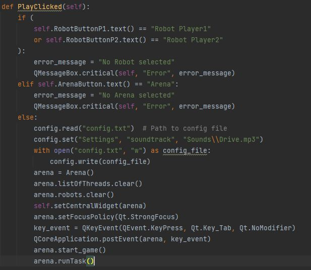
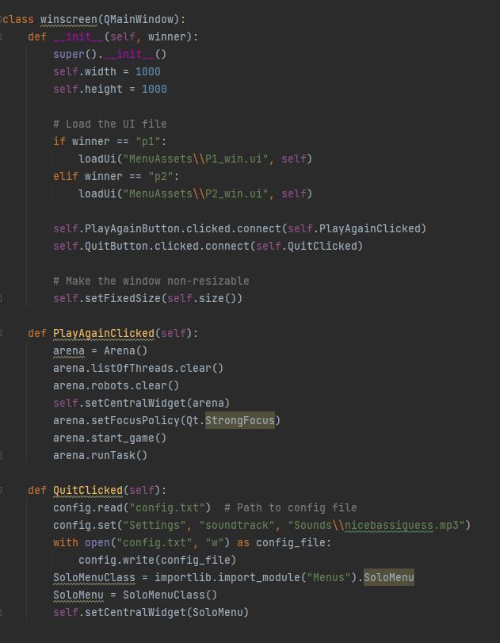
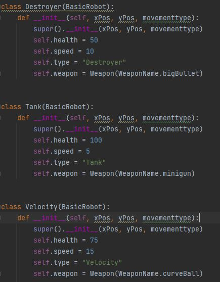
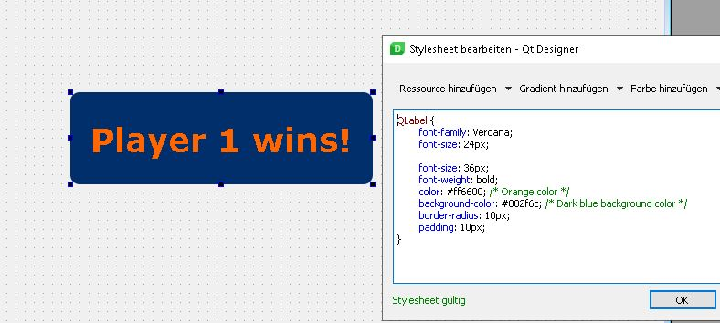

Starting the game(Nico)
In this last sprint a lot of small tasks were to complete.
The most important task was to ensure, that the game is startable from the menus.
PlayClicked() function

- The function checks if an arena and classes are selected.
- If not, an error message with the request to choose an arena/class occurs.
- Else, the background sound is changed to the gameplay music.
- We change to the actual arena window with setCentralWidget(arena)
Difficulty
When we switched to the arena window, keybinds didnt work, the player had to click on the screen to actually be able to input commands.
This was an unexpected mistake, since tests showed that the focus laid on the arena screen.
Our tutor provided us with a solution: to create an artificial press of the Tab button and send this event to the Arena window.
Winscreen
Another task was to complete the winscreen.

Giving different weapons to robot classes
We aim to provide diverse gameplay experiences to players through distinct classes.
To achieve this, we have equipped the robots in each class with varying stats and weapons.
The weapons have already been implemented; we only needed to assign them.

- Destroyer has low health but is with the most devastating weapon equipped.
- Tank has a lot of health, but is slow and does low damage.
- Velocity is fast and uses a tricky weapon.

- The screenshot shows the stylesheet of the button, which changes the visual appearance.
- Padding refers to the space between the actual content and the elements border.